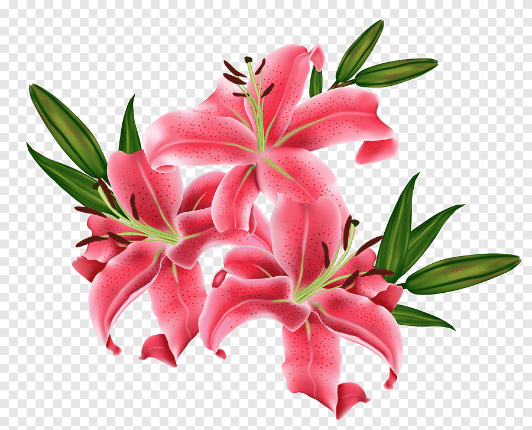

klik bunganya
happy birthday!
🌷 untuk kamu yang paling manis,
semoga setiap harimu mekar seperti bunga.
terima kasih sudah menjadi alasan tersenyum.
selamat ulang tahun, cinta.
Putar Lagu
tutup pesan